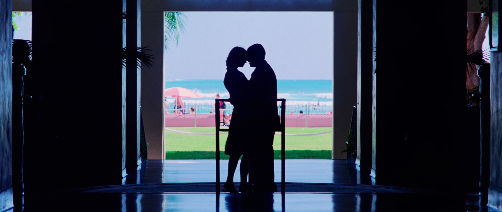
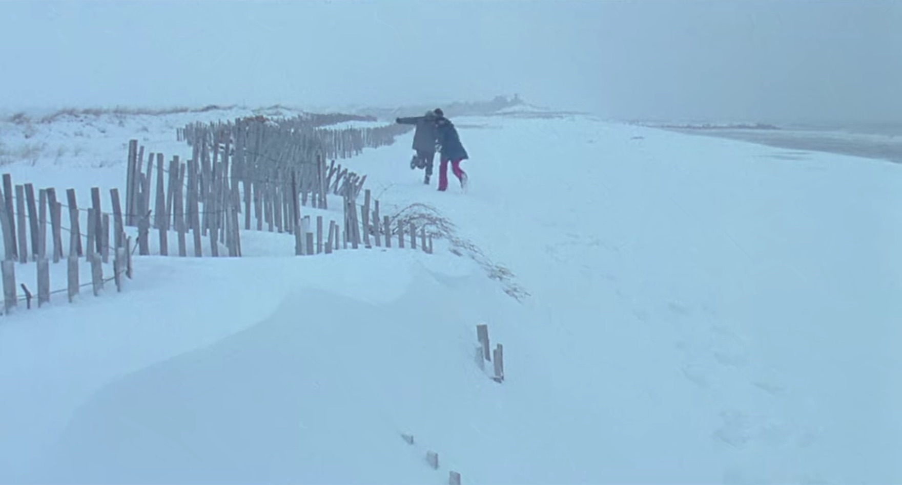
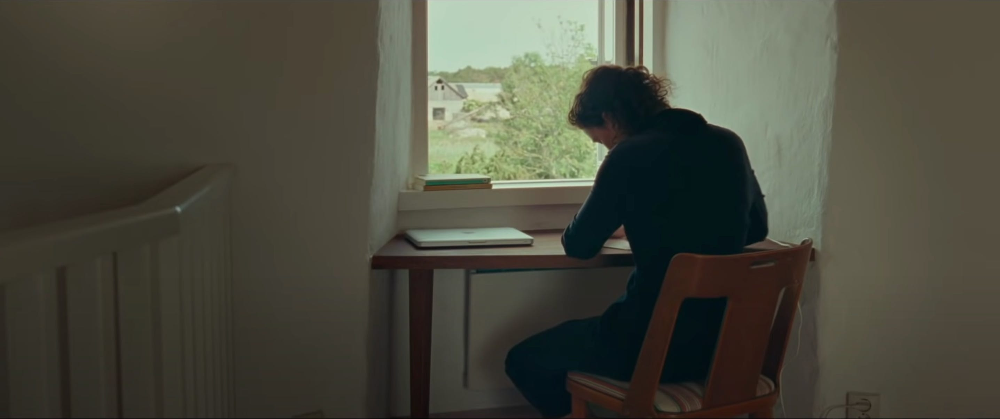
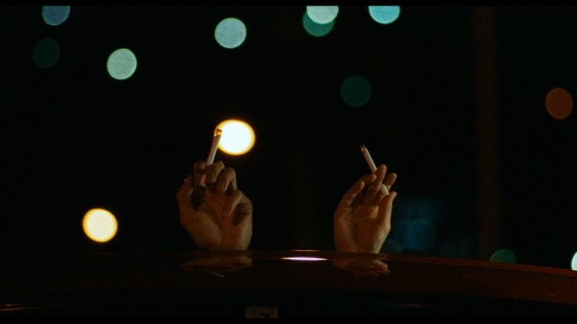
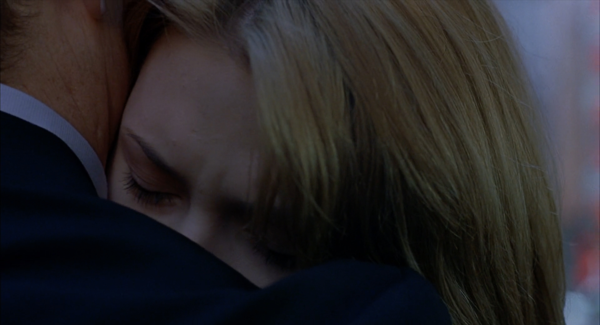
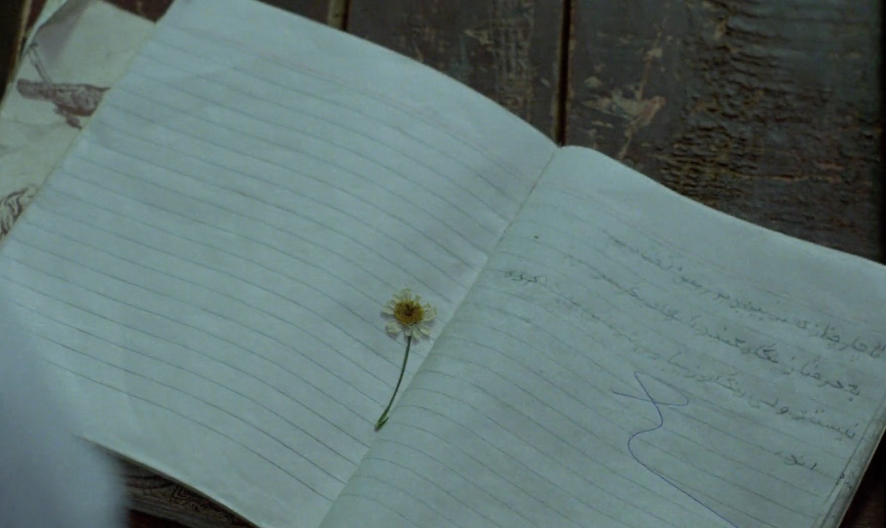

Stranger than Paradise (1984). dir. Jim JarmuschBlow Up (1966). dir. Michelangeo AntonioniNews From Home (1976). dir. Chantal AkermanFrancis Ha (2012). dir. Noah Baumbach

Punch-Drunk Love (2002). dir. Paul Thomas Anderson

Eternal Sunshine of the Spotless Mind (2004). dir. Michel GondryAmour (2012). dir. Michael Haneke

Bergman Island (2021). dir. Mia Hansen-LøveAlice in the Cities (1974). dir. Wim WendersC'mon C'mon (2021). dir. Mike MillsSomewhere (2010). dir. Sofia Coppola

Drive My Car (2021). dir. Hamaguchi Ryusuke

Lost in Translation (2003). dir. Sofia CoppolaChungking Express (1994). dir. Wong Kar-WaiMagnolia (1999). dir. Paul Thomas Anderson

Where Is My Friend's House? (1987). dir. Abbas KiarostamiConte d'hiver (1992). dir. Éric Rohmer